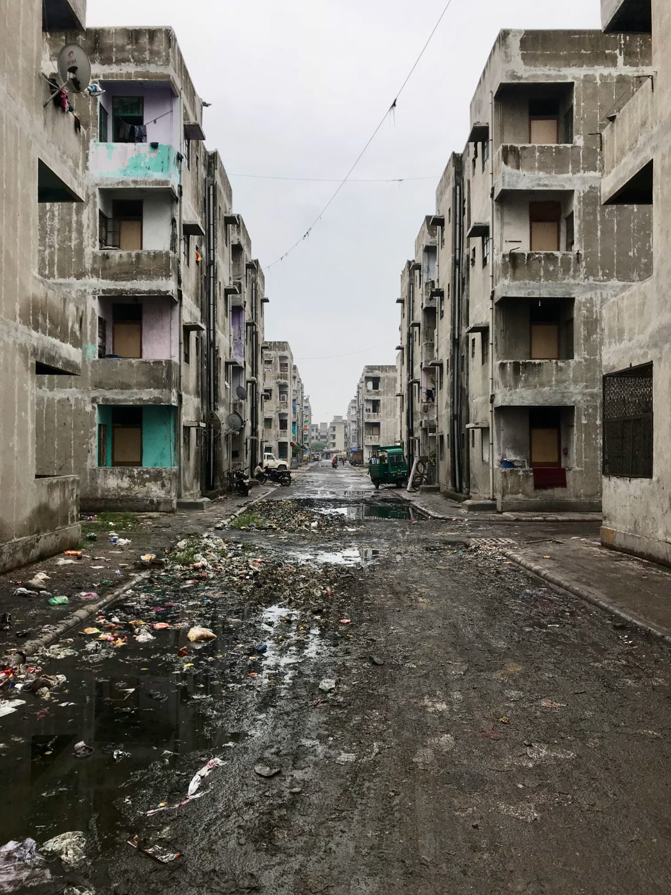
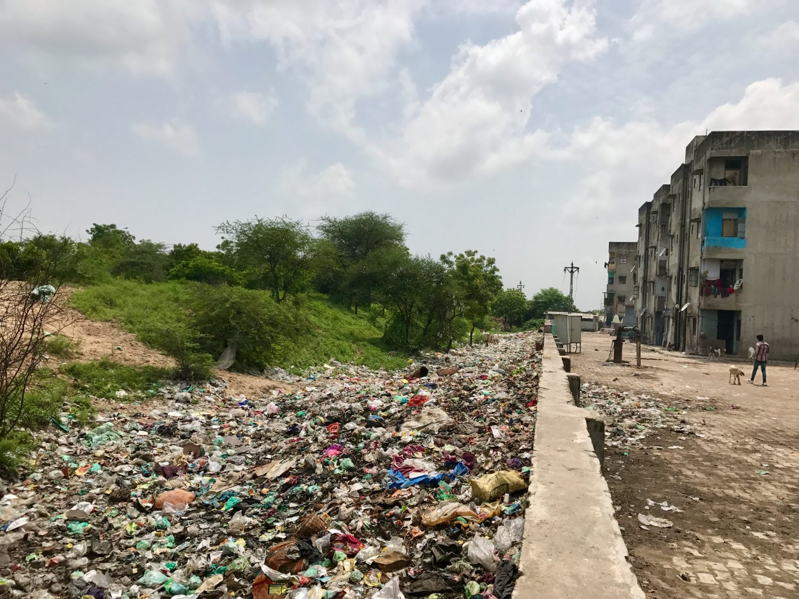
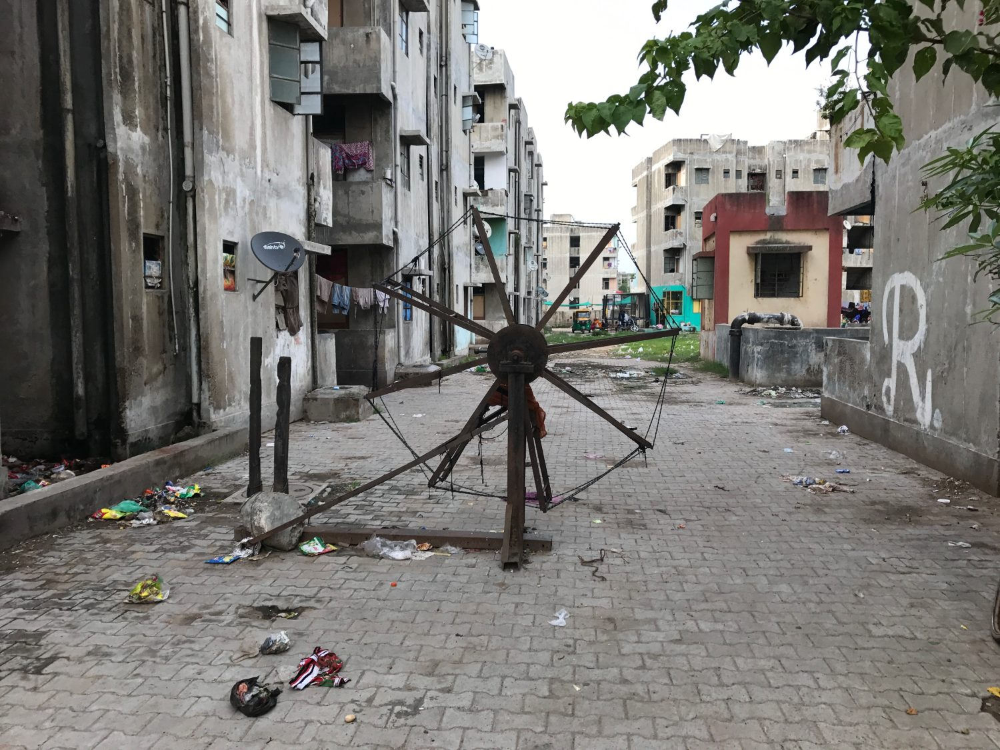
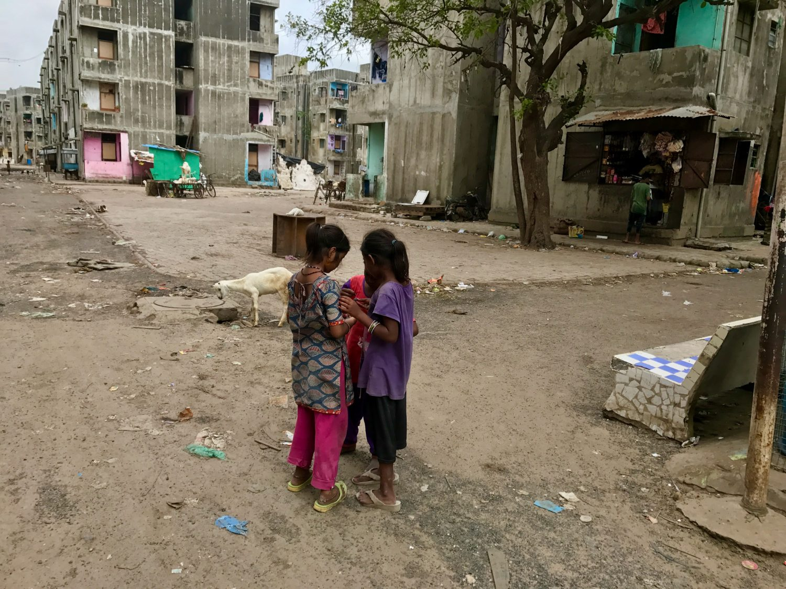
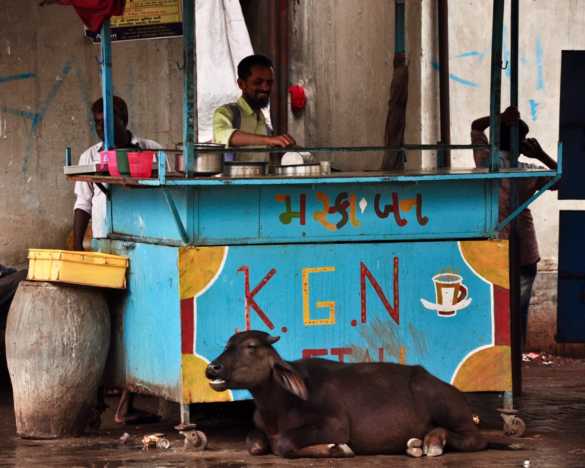
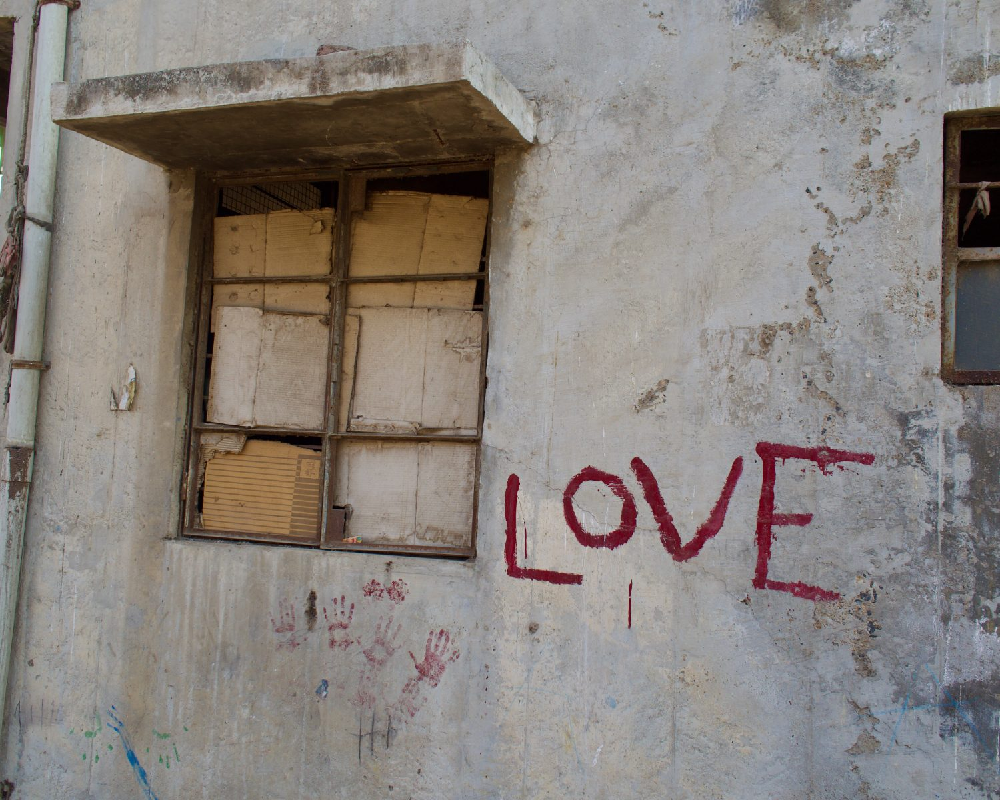
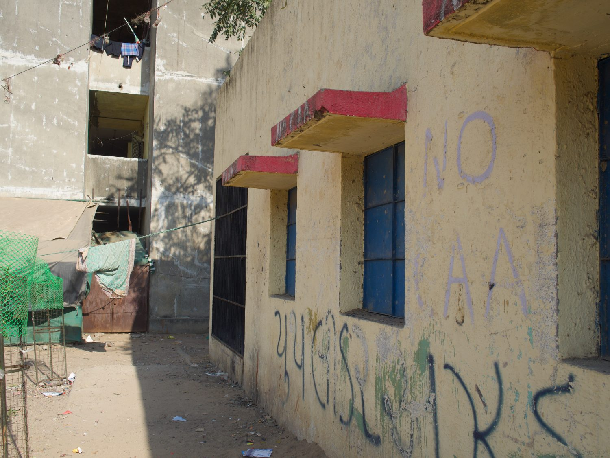
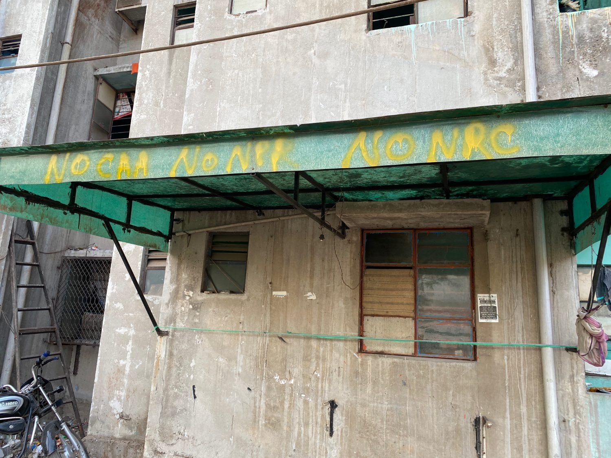

Shrey Kapoor
The politics of violence in Hindu nationalist India.
My research asks how communal violence, development-induced displacement, and infrastructural violence are articulated together to build and sustain Hindu nationalist hegemony, and how that power now travels across borders. My book project, From Riots to Dispossession (invited for review at Stanford University Press), traces this in Ahmedabad as communal capitalism: after the 2002 pogrom, anti-Muslim violence migrated from the riot into the procedures of urban development, articulating capitalist accumulation with ethno-territorial ordering at the city's double frontier. A second strand follows the same authoritarianism abroad: how India's transnational repression runs through the everyday infrastructure of diaspora life.
Two book manuscripts in progress, and a new project on transnational repression and diaspora politics.
I work between development sociology, political science and South Asian studies. Before Basel and Zürich I completed my PhD at Cornell, with earlier training at Sciences Po and St. Gallen; my research has been supported by the Henry Luce Foundation and Swiss federal authorities.
shrey.kapoor@unibas.ch →The politics of violence at home and abroad
I develop a conjunctural account of how violence builds power in Modi's India: how communal violence, development-induced displacement and infrastructural violence are articulated together to sustain Hindu nationalist hegemony, and how that hegemony now reaches across borders. Across three connected strands, I move from communal capitalism at the urban frontier, to the transnational repression of diaspora communities, to infrastructures and global ordering.
Communal Capitalism & the Urban Frontier
My doctoral work follows anti-Muslim violence in Ahmedabad beyond the moment of the riot. After the 2002 pogrom, segregation shifted from orchestrated rioting into the technical procedures of urban development: a productive violence that builds Hindu nationalist hegemony even as it conceals itself. I call this communal capitalism, the articulation of capitalist accumulation with ethno-territorial ordering at the city's double frontier, where communal logics determine where and how capitalist violence is allowed to operate. Through the Luce-funded Indian Muslims Today network I extend the argument to ghettoization across Indian cities, treating it as an active political-economic project and recovering the forms of Muslim agency that persist within and against it.
Transnational Repression & Diaspora
A second strand follows this authoritarianism across borders. Though routinely called the ‘world’s largest democracy,’ India has become a growing vector of transnational repression; I trace how its extraterritorial power runs through the everyday infrastructure of diaspora life, temples, associations and digital networks that carry both money and meaning. My commissioned study of Tibetan and Uyghur communities in Switzerland extends the question to how repression operates even in high-rights democratic settings.
Infrastructure & Global Order
Across these projects I develop a materialist and relational approach to space, infrastructure and racial capitalism. With Jutta Bakonyi I convene a long-running EISA research section and collaborate on capitalist world ordering, asking how infrastructures of circulation both enable global order and become sites of its disruption.
Publications
Grouped by type and listed in reverse chronological order. Forthcoming and under-review work is noted inline.
Teaching
Courses at PhD, MA and BA levels in research methods, interdisciplinarity, and the politics of violence and repression, taught at Zürich, Basel and Cornell.
Fieldwork
Photographs from fieldwork in Ahmedabad's resettlement colonies, 2017–2021.








Curriculum Vitae
French (C2)
Spanish (B2)
MAXQDA
Stata